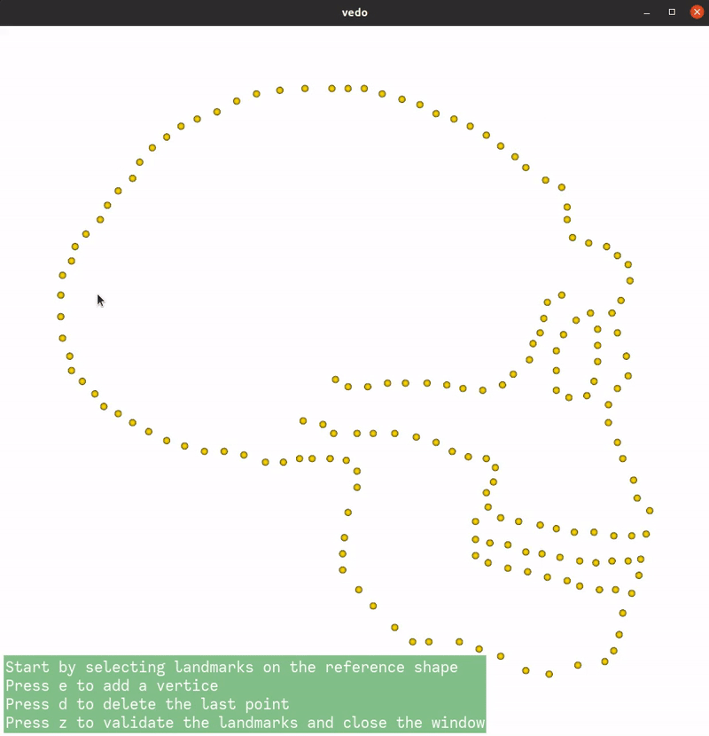

Note
Go to the end to download the full example code
Set landmarks
Landmarks can be set manually or using the landmark setter.
import pyvista as pv
from pyvista import examples
import skshapes as sks
# sphinx_gallery_thumbnail_path = 'source/images/landmarks_skull.gif'
LandmarkSetter can be used to set landmarks interactively on a mesh.
filename = "../test_data/skulls/skull_erectus.vtk"
shape = sks.PolyData(filename)
if not pv.BUILDING_GALLERY:
app = sks.LandmarkSetter(shape)
app.start()
else:
shape.landmark_indices = [95, 114, 155, 3, 9, 65, 29, 55, 74]
print(shape.landmark_indices)
tensor([ 95, 114, 155, 3, 9, 65, 29, 55, 74])
Using LandmarkSetter with a list of shapes will set landmarks in correspondence. One the landmarks are selected on the first shape of the list (the reference shape), the user can select the same landmarks on the other shapes.

# shape1 = sks.PolyData(examples.download_human())
shape1 = sks.PolyData(examples.download_woman())
shape2 = sks.PolyData(examples.download_doorman())
if not pv.BUILDING_GALLERY:
app = sks.LandmarkSetter([shape1, shape2])
app.start()
else:
landmarks1 = [4808, 147742, 1774]
landmarks2 = [325, 2116, 1927]
shape1.landmark_indices = landmarks1
shape2.landmark_indices = landmarks2
print("Landmarks shape 1:")
print(shape1.landmark_indices)
print("Landmarks shape 2:")
print(shape2.landmark_indices)
/opt/hostedtoolcache/Python/3.11.11/x64/lib/python3.11/site-packages/jaxtyping/_decorator.py:562: UserWarning: Mesh has been cleaned and points were removed. point_data is ignored.
return wrapped_fn_impl(args, kwargs, bound, memos)
Landmarks shape 1:
tensor([ 4808, 147742, 1774])
Landmarks shape 2:
tensor([ 325, 2116, 1927])
Total running time of the script: (0 minutes 0.471 seconds)